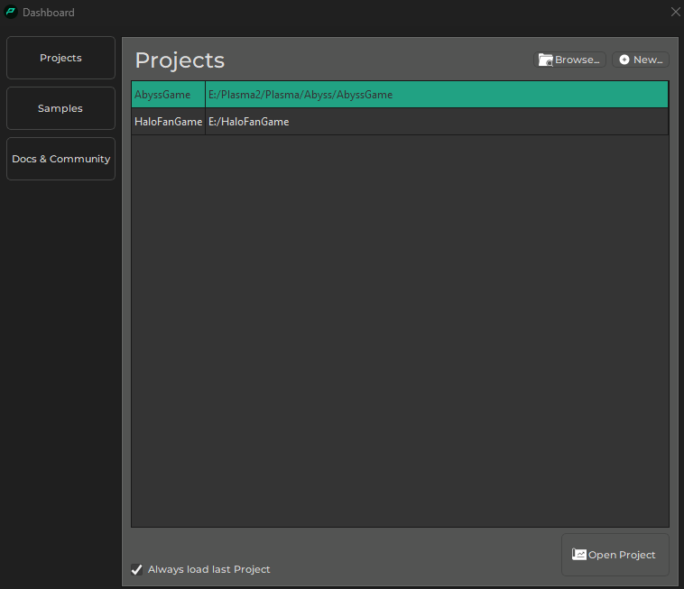
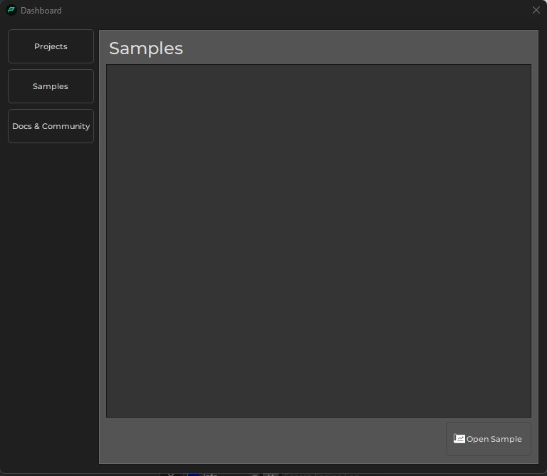

Dashboard
The editor dashboard is a welcome screen that helps you getting started quickly. The buttons on the left-hand switch between the available options.
Projects

On the projects page you can easily open a recently used project. To create a new project, click the New button. To open an existing project that isn't shown in the list, click the Browse... button.
To open a project selected from the list, use the Open Project button or double click the list entry.
If you uncheck Always load last project, then the editor won't automatically open the project that you had open last time, when it starts up. Instead, it will always display the dashboard.
Samples - TODO
